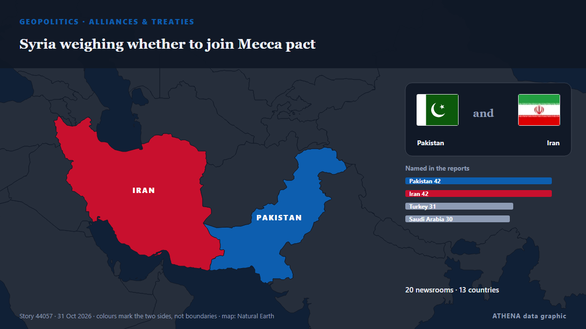

Alliances & treaties
| 18 Oct | 0 |
|---|---|
| 19 Oct | 0 |
| 20 Oct | 0 |
| 21 Oct | 1 |
| 22 Oct | 0 |
| 23 Oct | 0 |
| 24 Oct | 0 |
| 25 Oct | 0 |
| 26 Oct | 2 |
| 27 Oct | 2 |
| 28 Oct | 3 |
| 29 Oct | 2 |
| 30 Oct | 1 |
| 31 Oct | 1 |

Syria weighing whether to join Mecca pact
Opposition Republican People’s Party (CHP) leader Kemal Kılıçdaroğlu has stated his party will vote in favor of a defense agreement between Türkiye, Pakistan and Saudi Arabia when it comes before… from Hürriyet Daily News
CSA does not bind parties' political positions, says Adam Adli
MELAKA: The Confidence and Supply Agreement (CSA) signed yesterday between the federal government, Bersatu, and independent members of parliament does not bind any party's political stance or… from New Straits Times
Germany news: Merz in Asia warns against weaponizing trade
German diplomacy in Asia takes focus this week, as Chancellor Merz wraps up a three-country Asian business tour in South Korea. from DW English
Pakistan, Nigeria call for stronger strategic partnership, expanded trade
Associated Press Of Pakistan Pakistan, Bangladesh eye stronger trade ties through improved air links, diversified imports Bangladesh High Commissioner to Pakistan M.D. from APP (Associated Press of Pakistan)
We do not see our return to CSTO says Armenia's Mirzoyan
Armenia has ruled out resuming its participation in the Collective Security Treaty Organization (CSTO), reaffirming that its membership remains frozen and that Yerevan has no intention of reversing… from AzerNews
Vietnam, Poland establish strategic partnership, set $6B trade target
Vietnam and Poland established a strategic partnership on Oct. from VnExpress International
Oman calls for economic and security pact between Iran and Gulf countries
Oman's Foreign Minister Badr Al Busaidi has called for a peace agreement between the Arab Gulf states and Iran, which would see the countries collaborating on security and the regional economy. from The National